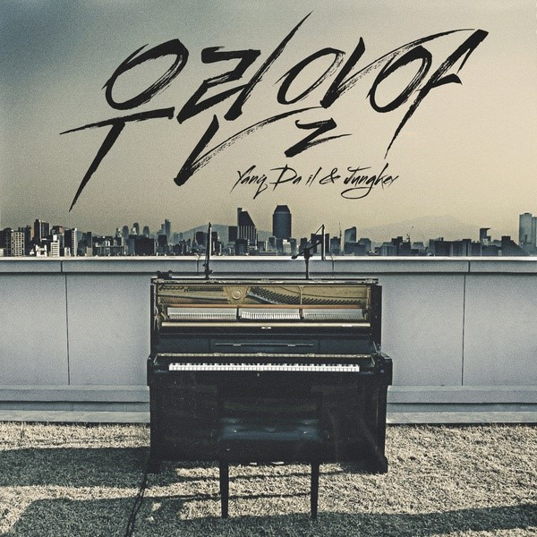
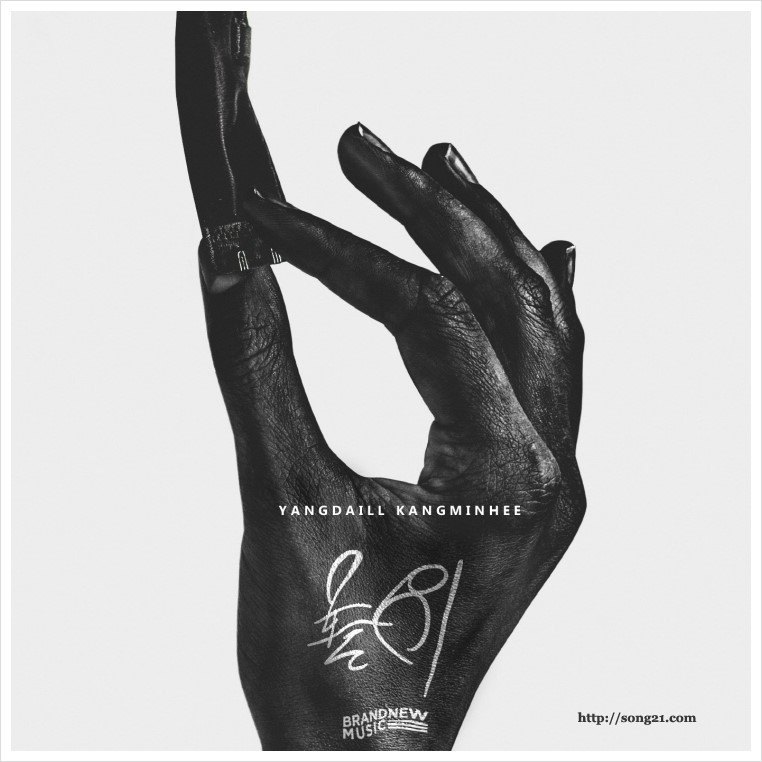
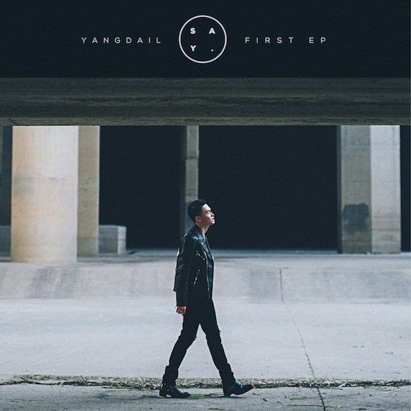
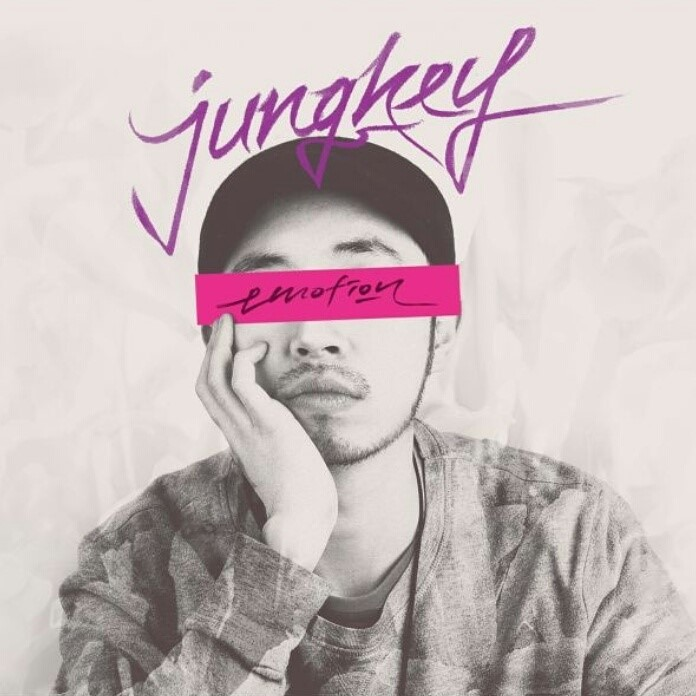

MyFavorite Thing
음악
좋아하는 가수
양다일
앨범
-
우린알아
우린 알아 Live MV 가수명에는 '양다일 & 정키(JungKey)' 라고 적혀있지만, 정키는 작곡에만 참여하였다.
-
놀이
같은 소속사 브랜뉴뮤직 2인조 그룹 미스에스의 메인보컬 강민희와 콜라보로 발표한 싱글이다. 피처링 역시 같은 소속사 San E가 참여했다.
-
SAY
앨범 이름 Say의 뜻은 이름 그대로 '사랑'이라는 이름 앞에 가장 가까운 사람에게도 차마 말하지 못했던 이야기들을 양다일이 대신 이 앨범으로 '말해' 준다는 의미와 수 많은 인연과 관계를 지나 지금에 도착한 현재의 양다일이 자신을 사랑해주는 모든 사람들에게 지금의 솔직한 자신을 이 앨범으로 '말해' 준다는 의미, 이렇게 2가지이다. 여담으로 타이틀곡 선정 계기가 매니저중 한 사람이 감동을 받아 눈물을 흘렸기 때문이라고 한다.
-
잊혀지다
정키의 첫번째 정규 앨범 Emotion에 양다일이 피처링 신분으로 참여한 곡들이 수록되었다. 수록된 곡은 6번 트랙의 잊혀지다와 11번 트랙의 이토록 뜨거운 순간이다. 두 곡 모두 선공개된 적이 있으며, 그 중에서도 잊혀지다는 양다일과 정키가 다시 만나서 곡의 구성, 길이, 뮤직비디오까지 수정해서 다시 수록했다고 한다..
-
INSIDE
정키의 첫번째 정규 앨범 Emotion에 양다일이 피처링 신분으로 참여한 곡들이 수록되었다. 수록된 곡은 6번 트랙의 잊혀지다와 11번 트랙의 이토록 뜨거운 순간이다. 두 곡 모두 선공개된 적이 있으며, 그 중에서도 잊혀지다는 양다일과 정키가 다시 만나서 곡의 구성, 길이, 뮤직비디오까지 수정해서 다시 수록했다고 한다..